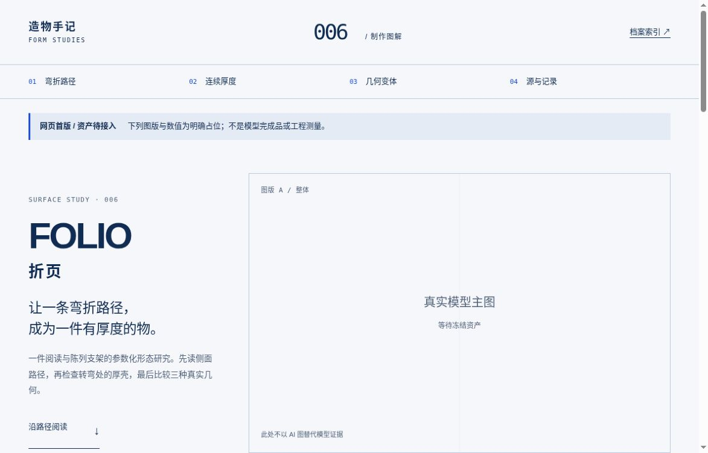
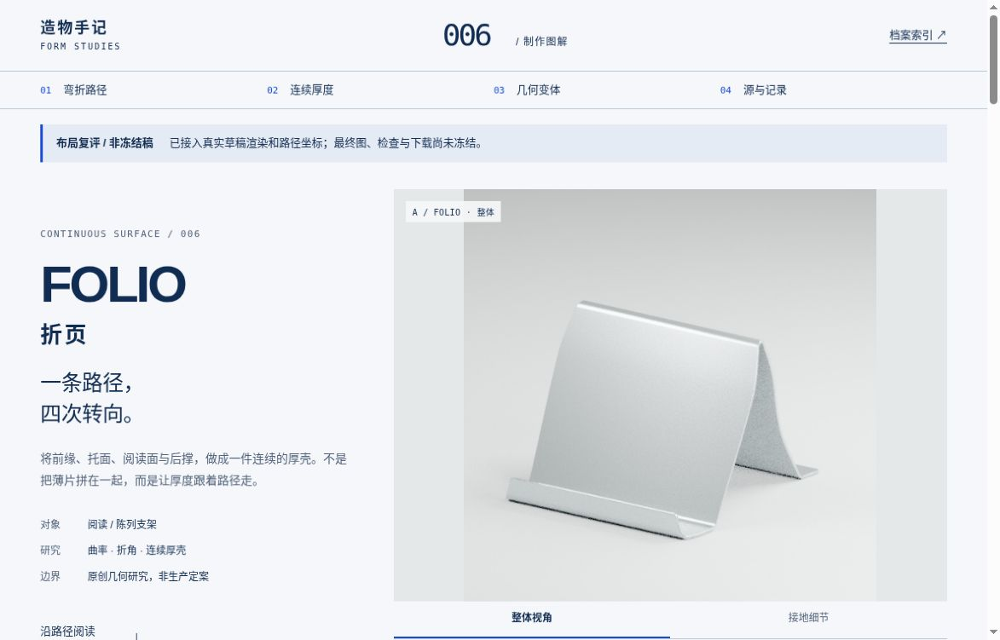
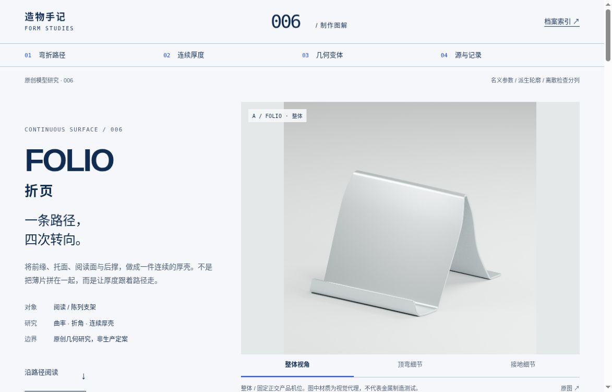

WEB DESIGN / STUDY 006
用图解释制作，
而不是给模型换皮。
FOLIO折页的独立网页：冷白与深蓝的技术编辑。沿路径阅读、在局部看厚壳、把三种真实轮廓置于同一比例尺，最后回到可核查的文件。
从首版到真实资产



证据与判断分开保存
- 原站检索：nendo、V&A与Vitra — 访问日期、实际观察、推断与未采用。
- 网页设计评审 — 首版问题与修订决定。
- 浏览器复检范围 — 通过、未验与限制分列。
- 网页复盘 — 带入下一轮的方法。
前后图为真实阶段截图；不把资产未齐的草稿包装成最终交付。